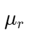

磁 | Magnetism磁力 | Magnetic Force对于一个电荷的磁力对于长直导线的磁力毕奥-萨伐尔定律 | Biot-Savart Law磁化强度 | MagnetisationH: magnetic field strength: 磁导率(,permeability,): 真空磁导率(,permeability of free space,) (constant): 相对磁导率(,relative permeability,) 点此查看原文